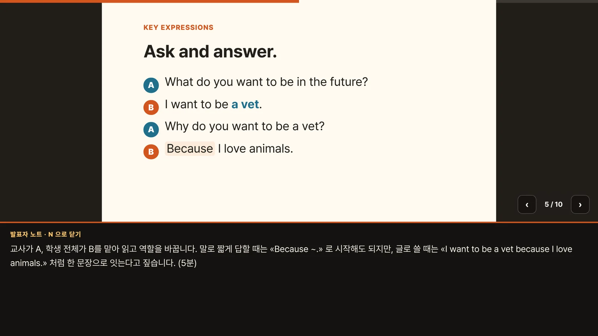
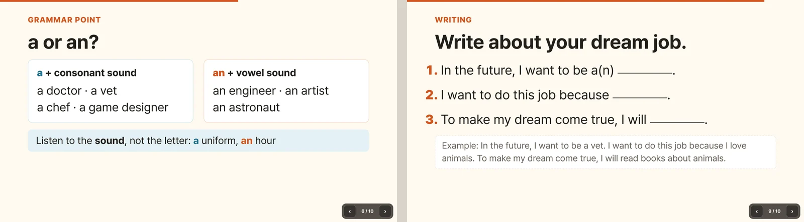
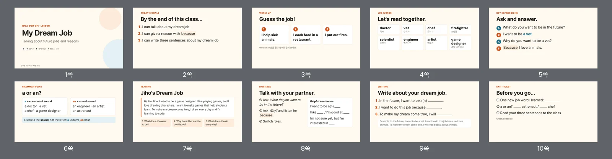

HTML 발표자료 만들기
키보드로 넘기고, 전체 화면과 발표자 노트를 쓰고, 인쇄하면 PDF가 되는 한 파일짜리 발표자료를 만듭니다. 파워포인트가 없는 PC에서도 브라우저만 있으면 열립니다.
- 목표
- 한 차시 수업 흐름을 그대로 따라가는 발표자료 10장을 만들고 PDF로도 저장한다 (예시: 중학교 2학년 영어 «My Dream Job» — 장래 희망과 이유 말하기)
- 준비물
클로드연수안에 만든 빈9차시폴더, 크롬이나 엣지 브라우저- 결과물
- ①
index.html한 파일 — ←·→·스페이스로 넘기기, F 전체 화면, N 발표자 노트, 진행 막대, 인터넷 없이 열림 ② 한 장에 슬라이드 하나씩 담긴 PDF - 주의
- 영어 문장의 정확성은 교사가 마지막으로 확인 · 교과서 지문과 그림은 그대로 넣지 않기
2차시처럼 코워크로 파워포인트 파일을 만들 수도 있지만, HTML 발표자료는 파일 하나라서 어느 PC에서든 더블클릭하면 열리고, 넘기기·노트·진행 막대 같은 기능을 말로 주문해 넣을 수 있습니다. 핵심은 둘입니다. Plan 모드로 슬라이드별 구성안을 먼저 받는 것, 그리고 다 만든 뒤 직접 넘겨 보며 한 장씩 고치는 것입니다.
먼저 볼 영상

영상은 VS Code 와 함께 쓰지만, 이 차시는 데스크톱 앱의 Code 탭만 씁니다. 따로 설치할 프로그램은 없습니다.
1 준비
클로드연수안에 빈 폴더9차시를 만듭니다.- 수업 흐름을 이미 정해 두었다면 메모(예:
수업흐름.txt)로 같은 폴더에 넣습니다. 없으면 아래 프롬프트의 «수업 흐름» 줄을 그대로 씁니다. - Code 탭을 처음 쓴다면 연수 전 점검의 2번(데스크톱 앱 설치)을 먼저 확인합니다.
2 따라 하기
번호 순서대로 진행합니다. 프롬프트가 필요한 단계에는 바로 아래에 복사 단추가 있습니다.
- 데스크톱 앱 사이드바 맨 위의 Code 탭을 누릅니다.
- 프롬프트 상자 아래 줄의 환경 단추에서 Local 묶음의 맨 위 항목(내 컴퓨터)을 고르고, 폴더 단추의 Open folder… 로
클로드연수/9차시를 고릅니다. - 같은 줄의 권한 모드 단추를 Plan 으로 바꿉니다. Plan 모드에서는 파일을 만들지 않고 계획만 나옵니다.
- 구성안을 받습니다. 아래 프롬프트를 보내면 슬라이드마다 화면에 들어갈 문장과 발표자 노트를 표로 보여 줍니다.
중학교 2학년 영어 'My Dream Job' 한 차시(45분) 수업에서 쓸 발표자료를 만들려고 합니다. 먼저 구성안만 세워 주세요. 요구 사항 - index.html 한 파일. 외부 라이브러리·글꼴·인터넷 없이 열려야 함 - 16:9 슬라이드 10장 안팎. 교실 TV 뒷자리에서도 읽히는 큰 글씨, 한 장에 핵심 하나 - ←/→ 화살표와 스페이스로 넘기기, F 전체 화면, N 발표자 노트 보이기·숨기기 - 화면 위에 진행 막대, 구석에 쪽 번호 (3 / 10) - 인쇄하면 한 장에 슬라이드 하나 (PDF로 저장할 수 있게) - 발표자 노트는 한국어로: 진행 방법, 예상 시간, 정답 - 수업 흐름: 목표 → 도입(직업 맞히기) → 직업 낱말 → 핵심 표현(What do you want to be? / I want to be ~ because ~) → a와 an → 짧은 읽기 글 → 짝 활동 → 세 문장 쓰기 → 마무리 확인 - 영어 문장은 중학교 2학년 수준으로, 문법·철자·관사(a/an)·문장부호가 정확하게 - 교과서 지문은 쓰지 말고 새로 쓴 글만 구성안은 표로 보여 주세요: 번호 | 제목 | 화면에 들어갈 영어 문장 | 발표자 노트 요지 | 시간 시간의 합이 45분인지도 함께 적어 주세요.
«화면에 들어갈 영어 문장» 열이 핵심입니다. 만들기 전에 영어 문장을 표로 받아 두면 교사가 문법과 수준을 먼저 검토할 수 있습니다. «인터넷 없이»를 적어 두면 학교망에서 막히는 외부 글꼴·라이브러리를 쓰지 않고, «인쇄하면 한 장에 하나»를 처음부터 적어 두어야 나중에 PDF가 깔끔하게 나옵니다.
캡처 넣을 곳 · L09-1
Plan 모드의 구성안 (따라 하기 4번).- 구성안 표 전체가 보이게
- 빨간 상자: 프롬프트 상자 아래 줄의 권한 모드 Plan
- 구성안을 읽고 고칠 점은 말로 고칩니다. 예: «6번 a와 an 슬라이드에 an engineer, an artist 예를 더해 주세요», «쓰기 활동을 10분으로 늘려 주세요»
- 권한 모드를 Manual 로 바꾸고 아래 프롬프트로 만들기를 맡깁니다. 바뀔 내용과 승인 단추가 나오면 승인합니다.
구성안대로 만들어 주세요. 다 만들면 앱 안 브라우저 창에서 열어 처음부터 끝까지 넘겨 보고, 아래를 확인해 표로 알려 주세요. - 화살표·스페이스·F·N 키가 모두 되는지 - 글자가 슬라이드 밖으로 넘치거나 잘리는 장이 없는지 - 인쇄할 때 한 장에 슬라이드 하나씩 나오게 설정했는지 (설정한 방법을 한 줄로)
- 대화창에 나온
index.html경로를 누르면 앱 안 브라우저 창에서 열립니다. 슬라이드를 한 번 누른 뒤 →·←·N 을 눌러 넘겨 봅니다.캡처 넣을 곳 · L09-2
앱 안 브라우저 창에 열린 발표자료 (따라 하기 7번).- 빨간 상자: 대화창의
index.html경로와 브라우저 창 - 번호 표시: ① 진행 막대 ② 쪽 번호
- 빨간 상자: 대화창의
- 아래 프롬프트로 영어 문장을 검수하게 하고, 넘겨 보며 눈에 띈 점은 하나씩 고칩니다. 예: «7번 읽기 글이 너무 길어요. 두 장으로 나눠 주세요»
슬라이드와 발표자 노트의 영어 문장을 검수해 주세요. 1. 문법·철자·대소문자·문장부호 2. 관사 a/an (a vet, an engineer 처럼 뒤 낱말의 소리에 맞는지) 3. 주어와 동사의 수 (Jiho wants 처럼) 4. 중학교 2학년이 읽기 어려운 낱말이 있는지 5. 한 장에 글이 5줄을 넘는 슬라이드가 있는지 (있으면 나누기) 6. 노트의 정답이 슬라이드 내용과 맞는지 틀린 곳은 고치고, «슬라이드 번호 | 원래 문장 → 고친 문장 | 고친 까닭» 표로 알려 주세요.
클로드의 영어는 대체로 정확하지만 관사·수 일치·대소문자에서 가끔 틀립니다. 고친 내용을 «원래 → 고친» 표로 받으면 교사가 한눈에 다시 확인할 수 있습니다.
- 파일 탐색기(맥은 Finder)에서
9차시/index.html을 더블클릭해 크롬이나 엣지로 엽니다. F 로 전체 화면을 켜고 수업처럼 한 번 넘겨 봅니다. 그다음 Ctrl+P(맥은 Cmd+P)를 눌러 인쇄 창의 대상(엣지는 프린터)을 PDF로 저장으로 바꾸고 저장합니다. 미리 보기에서 쪽 수가 슬라이드 수와 같은지 봅니다.캡처 넣을 곳 · L09-3
크롬(또는 엣지) 인쇄 창 (따라 하기 9번).- 빨간 상자: 대상(프린터) «PDF로 저장»
- 번호 표시: ① 미리 보기의 쪽 수 ② 저장 단추
3 결과 예시



예시 발표자료 직접 열어 보기 → · PDF로 저장한 것 보기
4 검증 포인트
② 학생 수준 — 처음 보는 낱말이 한 장에 두세 개를 넘지 않는지, 문장이 너무 길지 않은지 봅니다.
③ 글자 크기 — 교실 TV에 띄워 뒷자리에서 읽히는지 봅니다. 한 장에 5줄이 넘으면 나눕니다.
④ 키 조작 — ←·→·스페이스·F·N 이 모두 되는지, 마지막 장에서 더 넘기면 멈추는지 봅니다.
⑤ 인쇄 — 인쇄 미리 보기의 쪽 수가 슬라이드 수와 같은지, 잘린 글이 없는지 봅니다.
⑥ 인터넷 없이 열리는지 — 와이파이를 끄고 열거나, 파일만 USB로 교실 PC에 옮겨 엽니다. 글꼴이 바뀌어도 글이 넘치지 않는지 봅니다.
⑦ 발표자 노트 — 노트는 같은 화면 아래에 나옵니다. 교실 TV에 화면을 복제해 띄우면 학생에게도 보이므로, 수업 중에는 닫아 둡니다.
⑧ 저작권 — 교과서 지문·삽화나 인터넷 그림을 그대로 넣지 않았는지 봅니다.
5 다른 교과에 적용하기
따라 하기 4단계 프롬프트 대신 아래 교과 프롬프트를 씁니다. 교과마다 «다 만든 뒤 확인할 것»을 넣어 두었으니, 6단계와 8단계는 아래 공통 프롬프트로 바꿔 씁니다. 교과를 눌러 펼친 뒤 복사합니다.
구성안대로 만들어 주세요. 다 만들면 앱 안 브라우저 창에서 열어 처음부터 끝까지 넘겨 보고, 키 조작(화살표·스페이스·F·N), 글 넘침, 인쇄 설정, 그리고 구성안의 «다 만든 뒤 확인할 것»을 하나씩 점검한 결과를 표로 알려 주세요.
슬라이드와 발표자 노트를 검수해 주세요. 1. 구성안의 «다 만든 뒤 확인할 것»을 다시 하나씩 점검 2. 맞춤법·띄어쓰기, 교과서 용어와 다른 표현 3. 학생이 오해할 만한 그림이나 설명 4. 한 장에 글이 5줄을 넘는 슬라이드 (있으면 나누기) 틀린 곳은 고치고, «슬라이드 번호 | 원래 → 고친 내용 | 까닭» 표로 알려 주세요.
국어설명문의 짜임처음·중간·끝 구조를 예시 글 한 편으로 짚어 가기
중학교 국어 '설명문의 짜임' 한 차시(45분) 수업에서 쓸 발표자료를 만들려고 합니다. 먼저 구성안만 세워 주세요. 요구 사항 - index.html 한 파일. 외부 라이브러리·글꼴·인터넷 없이 열려야 함 - 16:9 슬라이드 10장 안팎. 교실 TV 뒷자리에서도 읽히는 큰 글씨, 한 장에 핵심 하나 - ←/→ 화살표와 스페이스로 넘기기, F 전체 화면, N 발표자 노트 보이기·숨기기 - 화면 위에 진행 막대, 구석에 쪽 번호 (3 / 10) - 인쇄하면 한 장에 슬라이드 하나 (PDF로 저장할 수 있게) - 발표자 노트: 진행 방법, 예상 시간, 정답 - 수업 흐름: 목표 → 설명문이란 → 처음·중간·끝의 역할 → 예시 글(새로 쓴 짧은 설명문) 문단별로 짚기 → 설명 방법(정의·예시·비교) 찾기 → 개요 짜기 활동 → 마무리 확인 - 교과서 지문은 쓰지 말고 새로 쓴 글만 다 만든 뒤 확인할 것 - 예시 글의 문단 표시가 처음·중간·끝 설명과 맞는지 - 설명 방법 이름이 교과서 용어와 같은지 구성안은 표로 보여 주세요: 번호 | 제목 | 화면에 들어갈 문장 | 발표자 노트 요지 | 시간
수학피타고라스 정리정사각형 넓이 그림으로 a² + b² = c² 를 단계별로
중학교 수학 '피타고라스 정리' 한 차시(45분) 수업에서 쓸 발표자료를 만들려고 합니다. 먼저 구성안만 세워 주세요. 요구 사항 - index.html 한 파일. 외부 라이브러리·글꼴·인터넷 없이 열려야 함 - 16:9 슬라이드 10장 안팎. 교실 TV 뒷자리에서도 읽히는 큰 글씨, 한 장에 핵심 하나 - ←/→ 화살표와 스페이스로 넘기기, F 전체 화면, N 발표자 노트 보이기·숨기기 - 화면 위에 진행 막대, 구석에 쪽 번호 (3 / 10) - 인쇄하면 한 장에 슬라이드 하나 (PDF로 저장할 수 있게) - 발표자 노트: 진행 방법, 예상 시간, 정답과 풀이 - 수업 흐름: 목표 → 직각삼각형의 빗변 → 세 변 위 정사각형의 넓이 비교 그림 → a² + b² = c² → 예제(3, 4, 5 / 5, 12, 13) → 연습 문제 3개 → 마무리 확인 - 그림은 SVG로 직접 그리기 다 만든 뒤 확인할 것 - 모든 예제와 연습 문제의 답을 다시 계산해서 맞는지 - 그림에서 빗변이 직각의 맞은편에 있는지 구성안은 표로 보여 주세요: 번호 | 제목 | 화면에 들어갈 문장·식 | 발표자 노트 요지 | 시간
영어길 묻고 답하기지도 그림과 함께 Excuse me, how can I get to ~?
중학교 영어 '길 묻고 답하기' 한 차시(45분) 수업에서 쓸 발표자료를 만들려고 합니다. 먼저 구성안만 세워 주세요. 요구 사항 - index.html 한 파일. 외부 라이브러리·글꼴·인터넷 없이 열려야 함 - 16:9 슬라이드 10장 안팎. 교실 TV 뒷자리에서도 읽히는 큰 글씨, 한 장에 핵심 하나 - ←/→ 화살표와 스페이스로 넘기기, F 전체 화면, N 발표자 노트 보이기·숨기기 - 화면 위에 진행 막대, 구석에 쪽 번호 (3 / 10) - 인쇄하면 한 장에 슬라이드 하나 (PDF로 저장할 수 있게) - 발표자 노트는 한국어로: 진행 방법, 예상 시간, 정답 - 수업 흐름: 목표 → 장소 낱말 → 핵심 표현(Excuse me, how can I get to ~? / Go straight. Turn left. It's next to ~.) → 간단한 동네 지도(SVG)로 따라 가기 → 짝 활동 → 마무리 확인 - 영어 문장은 문법·철자·관사·문장부호가 정확하게 다 만든 뒤 확인할 것 - 지도 위 길 안내 문장대로 가면 정말 그 장소에 도착하는지 - 전치사(next to, across from, between)가 그림과 맞는지 구성안은 표로 보여 주세요: 번호 | 제목 | 화면에 들어갈 영어 문장 | 발표자 노트 요지 | 시간
과학직렬·병렬 연결회로도와 전구 밝기 비교, 예상 → 결과 순서
중학교 과학 '전기 회로의 직렬·병렬 연결' 한 차시(45분) 수업에서 쓸 발표자료를 만들려고 합니다. 먼저 구성안만 세워 주세요. 요구 사항 - index.html 한 파일. 외부 라이브러리·글꼴·인터넷 없이 열려야 함 - 16:9 슬라이드 10장 안팎. 교실 TV 뒷자리에서도 읽히는 큰 글씨, 한 장에 핵심 하나 - ←/→ 화살표와 스페이스로 넘기기, F 전체 화면, N 발표자 노트 보이기·숨기기 - 화면 위에 진행 막대, 구석에 쪽 번호 (3 / 10) - 인쇄하면 한 장에 슬라이드 하나 (PDF로 저장할 수 있게) - 발표자 노트: 진행 방법, 예상 시간, 정답 - 수업 흐름: 목표 → 회로도 기호 → 직렬 연결 → 병렬 연결 → «전구 하나를 빼면?» 예상하기 → 결과 설명 → 생활 속 예(멀티탭, 집 안 전등) → 마무리 확인 - 회로도는 SVG로 직접 그리고 교과서 기호를 쓰기 다 만든 뒤 확인할 것 - 직렬에서 전구 하나를 빼면 모두 꺼지고, 병렬에서는 나머지가 켜진다고 맞게 나오는지 - 회로도 기호가 교과서와 같은지 구성안은 표로 보여 주세요: 번호 | 제목 | 화면에 들어갈 문장 | 발표자 노트 요지 | 시간
사회지역 축제와 문화축제 사례로 자연환경·생활 방식과 문화의 관계 찾기
중학교 사회 '지역 축제로 보는 문화' 한 차시(45분) 수업에서 쓸 발표자료를 만들려고 합니다. 먼저 구성안만 세워 주세요. 요구 사항 - index.html 한 파일. 외부 라이브러리·글꼴·인터넷 없이 열려야 함 - 16:9 슬라이드 10장 안팎. 교실 TV 뒷자리에서도 읽히는 큰 글씨, 한 장에 핵심 하나 - ←/→ 화살표와 스페이스로 넘기기, F 전체 화면, N 발표자 노트 보이기·숨기기 - 화면 위에 진행 막대, 구석에 쪽 번호 (3 / 10) - 인쇄하면 한 장에 슬라이드 하나 (PDF로 저장할 수 있게) - 발표자 노트: 진행 방법, 예상 시간, 예시 답 - 수업 흐름: 목표 → 축제란 → 축제 사례 3개(첨부한 축제자료.txt 에 있는 것만) → 자연환경·산업과의 관계 표 → 모둠 활동(우리 지역 축제 기획) → 마무리 확인 - 사진은 넣지 말고 아이콘·도형으로, 축제 정보는 첨부 자료에 있는 것만 쓰고 지어내지 않기 다 만든 뒤 확인할 것 - 화면의 축제 이름·장소·시기가 첨부 자료와 같은지 - 출처를 마지막 장에 적었는지 구성안은 표로 보여 주세요: 번호 | 제목 | 화면에 들어갈 문장 | 발표자 노트 요지 | 시간
역사조선의 건국위화도 회군부터 한양 천도까지 연표 슬라이드
중학교 역사 '조선의 건국' 한 차시(45분) 수업에서 쓸 발표자료를 만들려고 합니다. 먼저 구성안만 세워 주세요. 요구 사항 - index.html 한 파일. 외부 라이브러리·글꼴·인터넷 없이 열려야 함 - 16:9 슬라이드 10장 안팎. 교실 TV 뒷자리에서도 읽히는 큰 글씨, 한 장에 핵심 하나 - ←/→ 화살표와 스페이스로 넘기기, F 전체 화면, N 발표자 노트 보이기·숨기기 - 화면 위에 진행 막대, 구석에 쪽 번호 (3 / 10) - 인쇄하면 한 장에 슬라이드 하나 (PDF로 저장할 수 있게) - 발표자 노트: 진행 방법, 예상 시간, 정답 - 수업 흐름: 목표 → 고려 말의 상황 → 위화도 회군(1388) → 조선 건국(1392) → 한양 천도(1394) 연표 → 신진 사대부와 신흥 무인 세력 → 사건 순서 맞히기 활동 → 마무리 확인 - 인물 초상이나 사진은 넣지 않기 다 만든 뒤 확인할 것 - 모든 연도와 사건 이름을 다시 확인하고, 자신 없는 것은 노트에 «교과서 확인 필요»로 표시 - 연표의 순서가 연도 순서와 맞는지 구성안은 표로 보여 주세요: 번호 | 제목 | 화면에 들어갈 문장 | 발표자 노트 요지 | 시간
도덕진정한 우정상황 카드 → 생각 나누기 → 나의 다짐, 정답 없이
중학교 도덕 '진정한 우정' 한 차시(45분) 수업에서 쓸 발표자료를 만들려고 합니다. 먼저 구성안만 세워 주세요. 요구 사항 - index.html 한 파일. 외부 라이브러리·글꼴·인터넷 없이 열려야 함 - 16:9 슬라이드 10장 안팎. 교실 TV 뒷자리에서도 읽히는 큰 글씨, 한 장에 핵심 하나 - ←/→ 화살표와 스페이스로 넘기기, F 전체 화면, N 발표자 노트 보이기·숨기기 - 화면 위에 진행 막대, 구석에 쪽 번호 (3 / 10) - 인쇄하면 한 장에 슬라이드 하나 (PDF로 저장할 수 있게) - 발표자 노트: 진행 방법, 예상 시간, 예상되는 학생 답 - 수업 흐름: 목표 → «친구란?» 생각 열기 → 갈등 상황 카드 3장(새로 쓴 가상 상황) → 모둠 토의 질문 → 진정한 우정의 조건 정리 → 나의 다짐 쓰기 → 마무리 - 상황 속 인물은 실명이 아닌 가상 이름, 정답·오답 표시 없이 생각할 거리만 다 만든 뒤 확인할 것 - 특정 학생을 떠올리게 하는 이름·설정이 없는지 - 질문이 한쪽 답으로 몰지 않는지 구성안은 표로 보여 주세요: 번호 | 제목 | 화면에 들어갈 문장 | 발표자 노트 요지 | 시간
기술·가정청소년기의 식사균형 잡힌 한 끼 차리기, 수치 대신 실천 위주
중학교 기술·가정 '청소년기의 균형 잡힌 식사' 한 차시(45분) 수업에서 쓸 발표자료를 만들려고 합니다. 먼저 구성안만 세워 주세요. 요구 사항 - index.html 한 파일. 외부 라이브러리·글꼴·인터넷 없이 열려야 함 - 16:9 슬라이드 10장 안팎. 교실 TV 뒷자리에서도 읽히는 큰 글씨, 한 장에 핵심 하나 - ←/→ 화살표와 스페이스로 넘기기, F 전체 화면, N 발표자 노트 보이기·숨기기 - 화면 위에 진행 막대, 구석에 쪽 번호 (3 / 10) - 인쇄하면 한 장에 슬라이드 하나 (PDF로 저장할 수 있게) - 발표자 노트: 진행 방법, 예상 시간, 예시 답 - 수업 흐름: 목표 → 청소년기 영양의 중요성 → 식품군 → 아침 식사 → 간식 고르기 → 한 끼 식단 짜기 활동 → 마무리 확인 - 영양소 권장량 같은 수치는 넣지 말고, 넣어야 하면 교사가 준 자료의 수치와 출처만 다 만든 뒤 확인할 것 - 출처 없는 숫자가 화면이나 노트에 없는지 - 특정 음식이나 체형을 낮춰 말하는 표현이 없는지 구성안은 표로 보여 주세요: 번호 | 제목 | 화면에 들어갈 문장 | 발표자 노트 요지 | 시간
정보개인정보 보호«이 글, 올려도 될까?» 사례 판단 퀴즈
중학교 정보 '개인정보 보호' 한 차시(45분) 수업에서 쓸 발표자료를 만들려고 합니다. 먼저 구성안만 세워 주세요. 요구 사항 - index.html 한 파일. 외부 라이브러리·글꼴·인터넷 없이 열려야 함 - 16:9 슬라이드 10장 안팎. 교실 TV 뒷자리에서도 읽히는 큰 글씨, 한 장에 핵심 하나 - ←/→ 화살표와 스페이스로 넘기기, F 전체 화면, N 발표자 노트 보이기·숨기기 - 화면 위에 진행 막대, 구석에 쪽 번호 (3 / 10) - 인쇄하면 한 장에 슬라이드 하나 (PDF로 저장할 수 있게) - 발표자 노트: 진행 방법, 예상 시간, 정답과 까닭 - 수업 흐름: 목표 → 개인정보란 → 사례 판단 퀴즈 5개(가상 게시물: 올려도 될까?) → 비밀번호 만들기 원칙 → 피해를 입었을 때 할 일 → 마무리 확인 - 사례의 이름·학교·전화번호는 모두 가상이고 가상임이 드러나게(예: 010-0000-0000) 다 만든 뒤 확인할 것 - 퀴즈 정답과 까닭이 서로 맞는지 - 실제 사람·학교를 떠올리게 하는 정보가 없는지 구성안은 표로 보여 주세요: 번호 | 제목 | 화면에 들어갈 문장 | 발표자 노트 요지 | 시간
음악국악기 분류현악기·관악기·타악기로 나누고 소리 내는 방법 비교
중학교 음악 '국악기의 분류' 한 차시(45분) 수업에서 쓸 발표자료를 만들려고 합니다. 먼저 구성안만 세워 주세요. 요구 사항 - index.html 한 파일. 외부 라이브러리·글꼴·인터넷 없이 열려야 함 - 16:9 슬라이드 10장 안팎. 교실 TV 뒷자리에서도 읽히는 큰 글씨, 한 장에 핵심 하나 - ←/→ 화살표와 스페이스로 넘기기, F 전체 화면, N 발표자 노트 보이기·숨기기 - 화면 위에 진행 막대, 구석에 쪽 번호 (3 / 10) - 인쇄하면 한 장에 슬라이드 하나 (PDF로 저장할 수 있게) - 발표자 노트: 진행 방법, 예상 시간, 정답, 들려줄 음원은 교사가 따로 준비한다는 안내 - 수업 흐름: 목표 → 소리 내는 방법에 따른 분류 → 현악기(가야금·거문고·해금) → 관악기(대금·피리) → 타악기(장구·북) → 분류 퀴즈 → 마무리 확인 - 악기 사진 대신 이름과 간단한 도형, 음원 파일은 넣지 않기 다 만든 뒤 확인할 것 - 악기마다 분류가 맞는지 (해금은 현악기) - 악기 이름의 맞춤법 구성안은 표로 보여 주세요: 번호 | 제목 | 화면에 들어갈 문장 | 발표자 노트 요지 | 시간
미술1점 투시 원근법소실점과 수평선을 단계별 SVG 그림으로
중학교 미술 '1점 투시 원근법' 한 차시(45분) 수업에서 쓸 발표자료를 만들려고 합니다. 먼저 구성안만 세워 주세요. 요구 사항 - index.html 한 파일. 외부 라이브러리·글꼴·인터넷 없이 열려야 함 - 16:9 슬라이드 10장 안팎. 교실 TV 뒷자리에서도 읽히는 큰 글씨, 한 장에 핵심 하나 - ←/→ 화살표와 스페이스로 넘기기, F 전체 화면, N 발표자 노트 보이기·숨기기 - 화면 위에 진행 막대, 구석에 쪽 번호 (3 / 10) - 인쇄하면 한 장에 슬라이드 하나 (PDF로 저장할 수 있게) - 발표자 노트: 진행 방법, 예상 시간 - 수업 흐름: 목표 → 멀리 있는 것은 왜 작게 보일까 → 수평선과 소실점 → 상자 그리기 단계 1~4 (단계마다 한 장, SVG) → 복도 그리기 활동 → 마무리 - 작가 작품 이미지는 넣지 말고 직접 그린 SVG만 다 만든 뒤 확인할 것 - 깊이 방향의 선이 모두 한 소실점으로 모이는지 - 단계 그림이 앞 단계에 선을 하나씩 더하는 순서인지 구성안은 표로 보여 주세요: 번호 | 제목 | 화면에 들어갈 문장 | 발표자 노트 요지 | 시간
체육준비 운동과 안전동작 순서 슬라이드 + 자동 넘김 타이머
중학교 체육 '준비 운동과 안전' 한 차시 도입에서 쓸 발표자료를 만들려고 합니다. 먼저 구성안만 세워 주세요. 요구 사항 - index.html 한 파일. 외부 라이브러리·글꼴·인터넷 없이 열려야 함 - 16:9 슬라이드 10장 안팎. 체육관 뒤에서도 읽히는 아주 큰 글씨, 한 장에 동작 하나 - ←/→ 화살표와 스페이스로 넘기기, F 전체 화면, N 발표자 노트 보이기·숨기기 - 화면 위에 진행 막대, 구석에 쪽 번호 (3 / 10) - 동작 슬라이드에는 30초 타이머, T 키를 누르면 시간이 끝날 때마다 다음 장으로 자동 넘김 - 인쇄하면 한 장에 슬라이드 하나 (PDF로 저장할 수 있게) - 발표자 노트: 동작 요령, 주의할 점 - 수업 흐름: 목표 → 준비 운동이 필요한 까닭 → 동작 6가지(목·어깨·허리·무릎·발목·제자리 걷기) → 정리 → 안전 수칙 다 만든 뒤 확인할 것 - 타이머가 30초마다 넘어가고, T 를 다시 누르면 멈추는지 - 무리한 자세를 권하는 동작 설명이 없는지 구성안은 표로 보여 주세요: 번호 | 제목 | 화면에 들어갈 문장 | 발표자 노트 요지 | 시간
진로나의 직업 가치관가치관 카드 고르기 → 어울리는 직업 탐색
중학교 진로 '나의 직업 가치관' 한 차시(45분) 수업에서 쓸 발표자료를 만들려고 합니다. 먼저 구성안만 세워 주세요. 요구 사항 - index.html 한 파일. 외부 라이브러리·글꼴·인터넷 없이 열려야 함 - 16:9 슬라이드 10장 안팎. 교실 TV 뒷자리에서도 읽히는 큰 글씨, 한 장에 핵심 하나 - ←/→ 화살표와 스페이스로 넘기기, F 전체 화면, N 발표자 노트 보이기·숨기기 - 화면 위에 진행 막대, 구석에 쪽 번호 (3 / 10) - 인쇄하면 한 장에 슬라이드 하나 (PDF로 저장할 수 있게) - 발표자 노트: 진행 방법, 예상 시간 - 수업 흐름: 목표 → 직업 가치관이란 → 가치관 카드 8개(안정·보수·봉사·창의·성취·자율·인정·관계) → 나의 가치관 3개 고르기 → 가치관과 어울리는 직업 예 → 짝과 나누기 → 마무리 - 직업에 높고 낮음이 있다는 표현, 성별 고정관념을 담은 예시는 쓰지 않기 다 만든 뒤 확인할 것 - 직업 예가 한쪽 성별이나 특정 계층에 몰려 있지 않은지 - 가치관 이름과 설명이 서로 맞는지 구성안은 표로 보여 주세요: 번호 | 제목 | 화면에 들어갈 문장 | 발표자 노트 요지 | 시간
담임학기 첫날 학급 안내일과·규칙·연락 방법을 한 장씩, 학부모 총회에도
중학교 학기 첫날 학급 안내에 쓸 발표자료를 만들려고 합니다. 먼저 구성안만 세워 주세요. 요구 사항 - index.html 한 파일. 외부 라이브러리·글꼴·인터넷 없이 열려야 함 - 16:9 슬라이드 10장 안팎. 교실 TV 뒷자리에서도 읽히는 큰 글씨, 한 장에 핵심 하나 - ←/→ 화살표와 스페이스로 넘기기, F 전체 화면, N 발표자 노트 보이기·숨기기 - 화면 위에 진행 막대, 구석에 쪽 번호 (3 / 10) - 인쇄하면 한 장에 슬라이드 하나 (PDF로 저장할 수 있게) - 발표자 노트: 말할 내용 요지, 예상 시간 - 흐름: 담임 소개 → 하루 일과 → 우리 반 약속 3가지 → 1인 1역 → 연락 방법 → 학기 주요 일정 → 질문 받기 - 일정·시간·연락 방법은 첨부한 학급안내.txt 에 있는 것만 쓰고 지어내지 않기 - 학생 이름·사진·연락처는 넣지 않기 다 만든 뒤 확인할 것 - 날짜와 요일이 서로 맞는지, 첨부 파일과 같은지 - 개인 연락처가 화면에 없는지 구성안은 표로 보여 주세요: 번호 | 제목 | 화면에 들어갈 문장 | 발표자 노트 요지 | 시간
발표자료는 내용(구성안)과 기능(넘기기·노트·인쇄)으로 나뉩니다. Plan 모드로 슬라이드별 문장을 표로 먼저 받아 검토하고, 기능은 요구 사항에 처음부터 적어 둡니다. 다 만든 뒤에는 직접 넘겨 보며 한 장씩 고치고, 영어 문장처럼 정확해야 하는 부분은 «원래 → 고친» 표로 받아 교사가 마지막으로 확인합니다. 한 파일짜리라 USB로 옮겨도, 8차시처럼 인터넷에 올려도 그대로 열립니다.
· 키를 눌러도 넘어가지 않는다 — 키 입력이 대화창에 가 있습니다. 슬라이드를 한 번 누른 뒤 다시 누릅니다.
· F 를 눌러도 전체 화면이 안 된다 — 앱 안 브라우저 창에서는 안 될 수 있습니다. 파일 탐색기에서 더블클릭해 크롬·엣지로 엽니다.
· 인쇄하면 한 쪽에 두 장이 들어가거나 글이 잘린다 — «인쇄할 때 한 장에 슬라이드 하나씩, 16:9 용지로 나오게 고쳐 주세요»라고 요청합니다.
· PDF에 배경색이 빠졌다 — 인쇄 창의 설정 더보기에서 배경 그래픽을 켭니다.
· 노트가 학생에게도 보인다 — 화면을 복제해 띄운 상태입니다. 수업 중에는 N 으로 닫거나, 노트는 수업 전 리허설에만 씁니다.
· 파워포인트 파일이 꼭 필요하다 — PDF를 쓰거나, 2차시처럼 코워크로 파워포인트 파일을 만듭니다.
더 보기
 26:21
더 보기[풀버전] 클로드코드로 고퀄리티 PPT 슬라이드 자동으로 만드는 방법 (자료조사부터 슬라이드까지)빌더 조쉬 Builder Josh · 유튜브자료 조사부터 슬라이드까지 자동으로 만드는 흐름을 다룹니다. 설명란에 공개한 오픈소스 도구를 씁니다.
26:21
더 보기[풀버전] 클로드코드로 고퀄리티 PPT 슬라이드 자동으로 만드는 방법 (자료조사부터 슬라이드까지)빌더 조쉬 Builder Josh · 유튜브자료 조사부터 슬라이드까지 자동으로 만드는 흐름을 다룹니다. 설명란에 공개한 오픈소스 도구를 씁니다.
 19:51
더 보기클로드 코드로 PPT 만들기: 스킬 제작부터 마켓플레이스 배포까지짐코딩 · 유튜브PPT 만드는 스킬을 만들어 플러그인으로 묶어 공유하는 과정을 다룹니다. 11·12차시 스킬과 이어집니다.
19:51
더 보기클로드 코드로 PPT 만들기: 스킬 제작부터 마켓플레이스 배포까지짐코딩 · 유튜브PPT 만드는 스킬을 만들어 플러그인으로 묶어 공유하는 과정을 다룹니다. 11·12차시 스킬과 이어집니다.
출처: Claude Code 문서 Desktop — Preview your app(대화창의 HTML·PDF·영상 경로를 누르면 앱 안 브라우저 창에서 열림), Desktop(권한 모드) (2026-11-11 확인)